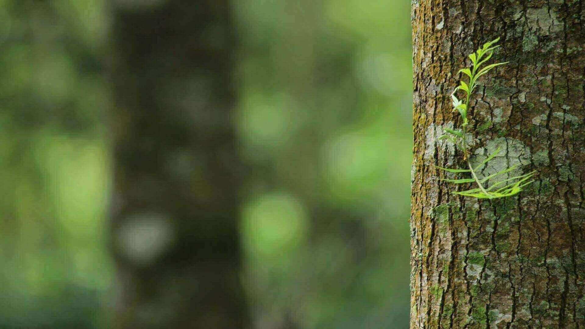
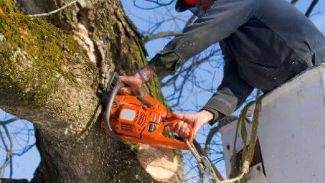

Tree Service in Pocatello ID
Safe Tree Removal, Trimming, and 24/7 Emergency Care. Locally Owned & Fully Insured.
Local Tree Service Near You in Pocatello, ID
If you’re looking for the most reliable tree service in Pocatello, ID , you’ve found the local experts. At Pocatello Tree Service, we specialize in high-hazard tree removal , expert tree trimming , and comprehensive arbor care designed to keep your property safe and beautiful.
Whether you have a storm-damaged limb threatening your roof or need routine pruning to maintain your curb appeal, our licensed and insured crew provides the rapid response and professional results Pocatello homeowners trust.
Don’t risk your property with a “guy and a chainsaw”—choose the local team with the equipment and expertise to get the job done right the first time.
For years, Pocatello Tree Service has provided precision tree removal, expert tree trimming, and emergency arbor care to homeowners throughout the Gate City, Chubbuck, and surrounding Bannock County areas. As a dedicated service area business, our mobile crew brings specialized rigging and safety equipment directly to your property, ensuring top-tier care without requiring a brick-and-mortar office visit.
Why choose Pocatello Tree Service?
Professional Experienced Staff
Our certified arborists bring decades of experience to every property. We use advanced rigging systems and safety techniques to perform professional tree removal and trimming with absolute precision, protecting your home and yard throughout the entire process.
Customer Satisfaction
Your peace of mind is our priority. From your first call to the final impeccable lawn cleanup, our dedicated team works with pride and dedication to deliver high-quality tree services that consistently exceed local property owner expectations.
Affordable Price
We provide top-tier tree care at competitive, honest rates. By utilizing highly efficient techniques and advanced machinery, we offer cost-effective tree removal, trimming, and stump grinding services throughout Pocatello without ever compromising on safety or quality.
Residential & Commercial Tree Service
We offer complete tree care solutions tailored for both residential homes and commercial properties. Whether handling hazard tree removal, developmental pruning, or rapid storm cleanup, our local specialists have the expertise to complete the job safely.
Why Pick a Quality Pocatello Tree Service Company?
The same reason why we go to the best physician if we fall ill. The same reason why we go to the best contractor if we need something fixes. We also need to make sure that need the best tree service in Pocatello, Idaho to take care of all our tree related problems.
As mentioned, tree removal services may sound mundane, but it’s not. It’s actually pretty challenging if inexperienced individuals will have to deal with it. Seasoned tree specialist already knows what to do and what approach to take in a lot of tree removal situations. So, if you pick a good quality tree service company then you save not only money but also valuable time and resources.
Our Professional Pocatello Tree Services
We offer comprehensive residential and commercial tree services in the Bannock County area.
Tree Removal
Professional tree removal services in Pocatello, ID. Our licensed arborists safely extract dead, diseased, or hazardous trees using precision rigging systems to protect your home and yard.
Learn More
Tree Trimming
Precision tree trimming and pruning in Pocatello, ID. Thin crowns, remove dangerous deadwood, and shape limbs to boost high-desert wind resistance and protect your roof from storm damage.
Learn MoreStump Grinding
Fast stump grinding and root removal in Bannock County. We grind stumps deep below ground grade to prevent pests like carpenter ants, clear your lawn, and prepare the site for fresh sod.
Learn MoreCabling & Bracing
Arborist cabling and structural bracing in Pocatello, Idaho. We install premium support systems to secure weak branch unions and protect storm-threatened trees from splitting or failing.
Learn MoreShrub Removal
Complete shrub removal and land clearing services. We excavate overgrown bushes and invasive roots to restore pedestrian access, improve curb appeal, and prep your landscaping for new designs.
Learn MoreEmergency Services
24/7 emergency tree service and rapid storm cleanup in Pocatello, ID. Call 208-417-7993 for urgent hazard removal of fallen trees, split limbs, and power line clearance.
Learn MoreWhy Pocatello Property Owners Trust Us
Providing Southeast Idaho with a safer, cleaner, and more reliable arborist service.
Arborist Expertise
We know the unique structural guidelines needed to keep local Siberian Elms, brittle Cottonwoods, and Maple trees standing strong against winter ice and windstorms.
$2M Insurance Cover
Rest easy. Our work is fully insured and licensed for public and private property safety. We maintain absolute compliance with ban-county safety rules.
Impeccable Cleanup
No branches, sawdust, or ruts left behind. We use protective mats for heavy machinery and clean your lawn thoroughly after every project.
Pocatello Residential & Commercial Tree Services
Whether it’s for your home or business no matter the number of trees we will work on, we got you covered. We know how our home should be safe from all sorts of dangers and in this case dying or withered trees, so we are here to help. We also know how important it is to keep your clients and customers safe in your place of business so we will be there to either remove or trim those trees. And trust us, we will make sure that both properties will still look their finest.
About Pocatello, Idaho
The city of Pocatello is a small, suburban city in Idaho. Its population, according to the US Census Bureau, is about 55,000 people. A famous water feature in Pocatello is the Portneuf River. For more information about Pocatello, Idaho, visit Wikipedia or the official City of Pocatello website.
Get Your Free Pocatello Tree Service Estimate
Speak directly with our expert arborist. We provide free site inspections, hazard evaluations, and transparent cost breakdowns over the phone.
208-417-7993*Serving the entire Pocatello, Idaho area.
Client Reviews for Pocatello Tree Service
Real reviews from local property owners in Southeast Idaho.
"In our yard, we have a huge elm tree, and in our backyard, we have a giant cottonwood that is trimmed by this company. I found them to be extremely knowledgeable and friendly. It was wonderful to watch the clean-up! I think it looked better than when the first group arrived! This tree service is certainly one we would recommend."
"This Tree Service company has awesome service. I was devastated by the removal of a very large tree, which was located right next to my house. It was an extremely competitive and fair bid. Their arrival was on time and as planned (even early!). I was impressed by the whole crew. Very hard workers and very safe as well."
"My business will always be with this tree service company. It was hired to trim a number of large trees in my backyard. The extremely large trees on my property needed a lot of attention. To make my trees healthy and safe, I asked them to do whatever was needed. It was discovered there were several dead limbs that had a lot of potential for damage come winter. Just as I wanted, I received perfectly trimmed trees that were safe and healthy."
Serving the Greater Pocatello Area
We are proud to be the first choice for tree services throughout Pocatello and the surrounding communities . Our crews are active daily in your neighborhoods, providing expert care to ensure the safety and beauty of our local landscape. Whether you need an emergency removal after a South Idaho windstorm or routine seasonal pruning, we serve every corner of the Gate City, including:
Highland
Expert tree trimming and maintenance for the beautiful properties in the Highland area .
University Area
Professional arbor care tailored to the unique landscapes surrounding Idaho State University .
Indian Hills
Safe, high-hazard tree removal services for the residential hillsides .
Johnny Creek
Comprehensive tree health assessments and pruning for the Johnny Creek community .
Frequently Asked Questions About Pocatello Tree Service
Common questions about our tree services in Pocatello.
On average tree removal and other related services could cost around $500. Don’t worry, we provide one of the most reasonably priced tree services in Pocatello so call us now for your free estimate!
Certain factors make tree removal a bit expensive. One is that when a tree is very large so it would be cheaper to trim it. The second reason factor is when a tree is near any property because we need to safeguard the said property in the process of removing a tree.
No matter your decision, we can work around it and find the best solutions. A tree should be removed for so many reasons. When it’s hollow when it shows signs of infections, or if there are any visible defects on its roots. Don’t worry, we can analyze it and tell you the best course of action for your problem.